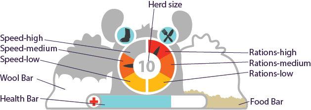
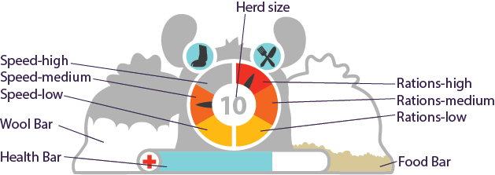

Gameplay Video
Screenshots
 


The Game
llammigration is a game about leading a herd of llamas on a journey through South America.
Lead your herd through the journey to a new land safely by managing their resources effectively
Trade at cities and major landmarks along the way

The Team
llammigration is a game by PureBread, a team of students from carleton university's interactive multimedia and design program. the team's members are cat wong, emma thurlow, sean leblanc, and vishesh thanki.